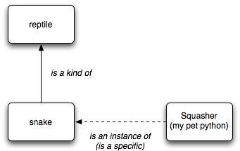
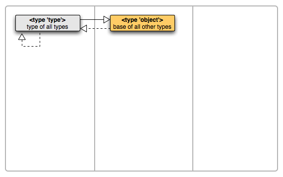
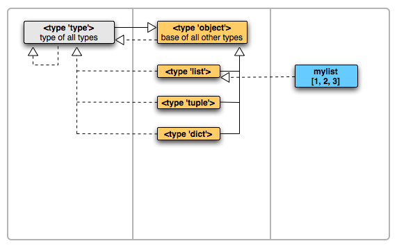
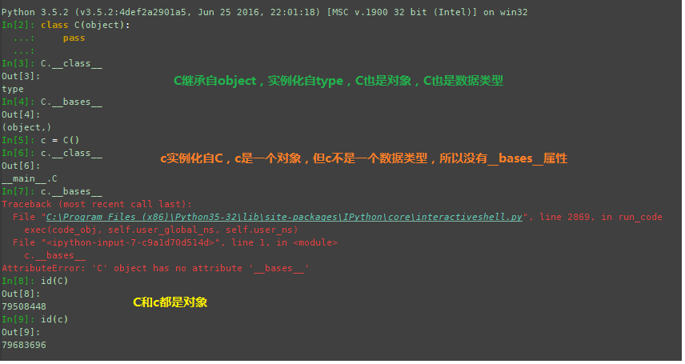
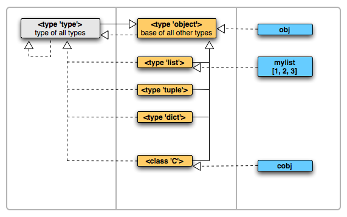
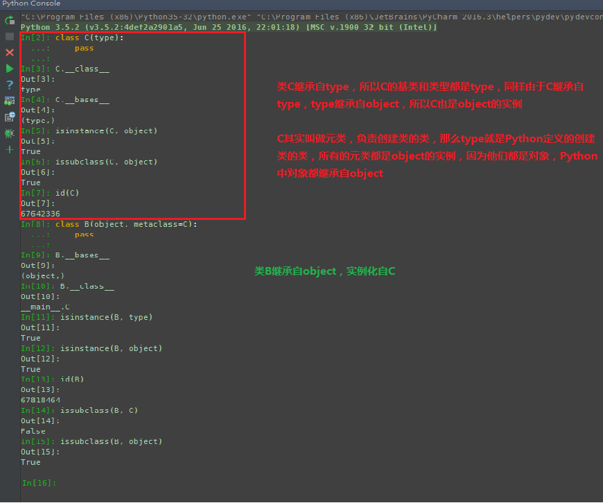
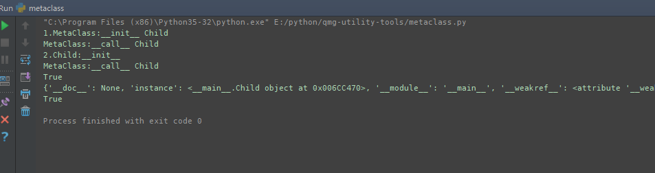

参看文章：https://www.zhihu.com/question/38791962
总结有以下几点：
在Python中查看父类通过
__bases__，查看类型通过__class__，判断实例通过isinstance，判断继承isubclass在Python里面，所有的东西都是对象的概念，即使type和object
type实例化自type类（
isinstance(type, type) == True），type类继承自object（issubclass(type, object) == True；isinstance(type, object) == True）object类没有继承自任何其他类(
object.__bases__为空)，object是type的实例（isinstance(object, type) == True）

以下摘抄自知乎大神解释
在面向对象体系里面，存在两种关系：
- 父子关系，即继承关系，表现为子类继承于父类，如『蛇』类继承自『爬行动物』类，我们说『蛇是一种爬行动物』，英文说『snake is a kind of reptile』。在python里要查看一个类型的父类，使用它的__bases__属性可以查看。
- 类型实例关系，表现为某个类型的实例化，例如『萌萌是一条蛇』，英文说『萌萌 is an instance of snake』。在python里要查看一个实例的类型，使用它的__class__属性可以查看，或者使用type()函数查看。
这两种关系使用下面这张图简单示意，继承关系使用实线从子到父连接，类型实例关系使用虚线从实例到类型连接：

type是type的实例，type继承自object，object是type的实例

list,tuple,dict都继承自object，但是他们都是type的实例

type,list,dict,tuple,object...都是type的实例（即对象，等同于我们定义的变量），除object之外都是继承自object，都是一个数据类型（即类，等同于自定义的类）
自定义继承自object的类C是type的实例，实例化自C的c是类C的具体实例


自定义继承自type的类C是type的实例，称其为元类，类B继承自object，实例化自C

Python中所有的类都实例化自元类（包括object和type），type是元类的根类；除object之外所有的类都继承自object，object是所有类的根类
uml类图中第一列是元类，第二列是元类创建的类，第三列是普通类的对象
既然可以控制类的生成，那么如何我们试试通过自定义元类实现单例模式
1 | class MetaClass(type): |
执行结果：

在上面单例模式中构造函数是被调用了的，但是只调用了一次，因为Child的实例只有一个
在Python中你无法通过将类的`__init__`方法设置为私有而控制`__init__`方法的调用，如果你想运行期间只有一个对象生成，除非你调用了`__init__`一次；
但是在Python中将一个对象作为函数调用的时候会调用它的`__call__`方法，而自定义的类都是一个对象，我们可以将其像函数一样调用，因此可以在类创建的过程中（元类`__init__`）添加一个自己实例的属性，在元类`__call__`方法中初始化这个实例，并且返回，已达到单例的目的
通过设置类的元类，可以自定义类的创建过程
如下所示：
1 | class TestMetaClass(type): |
该程序输出如下：
TestMetaClass.__new__ <class '__main__.TestMetaClass'>
TestMetaClass.__init__ <class '__main__.A'>
TestMetaClass.__call__ <class '__main__.A'>
A.__new__
A.__init__